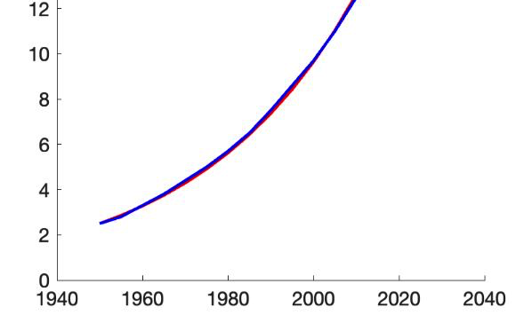

Introduction

Figure 1: Illustration of exponential population growth versus resource limits.Population growth patterns have been a central focus of demographic studies since Thomas Malthus proposed his exponential growth model in the late 18th century. This model suggests that populations grow exponentially when unchecked by resource limitations or other factors.
While many countries have transitioned to different growth patterns, some still exhibit characteristics of Malthusian growth. In this project, you will analyze population data from multiple countries to identify and study those that most closely follow the Malthusian model.
Task
Implement a data analysis pipeline to evaluate how closely different countries' population growth adheres to the Malthusian exponential growth model using population data from 1955 to 2020.
- Model Fitting: Fit the Malthusian model to population data for at least 10 different countries.
- Evaluation: Evaluate the goodness of fit using appropriate statistical measures. Identify which countries most closely follow the Malthusian growth pattern.
- Analytical Extensions: Incorporate at least two of the following analytical extensions:
- Demographic Transition Analysis: Compare countries at different stages of demographic transition and their deviation from the Malthusian model.
- Projection Accuracy: Test how well the fitted models predict population values for years beyond the training data.
- Comparative Model Analysis: Compare the Malthusian exponential model against logistic growth or other population models.
- Custom Extension: Implement another analytical extension of similar complexity of your choice.
Discussion Points
In your final report, be sure to address the following:
- Methodology: Explain your methodology for fitting the Malthusian model, including data sources, preprocessing steps, and parameter estimation techniques.
- Visualizations: Present visualizations comparing actual population data with model-fitted curves for each analyzed country.
- Goodness of Fit: Discuss the statistical measures used to evaluate goodness of fit and justify your selection of these metrics.
- Case Study: Present a case study of the country that exhibits the closest adherence to the Malthusian model, including historical context.
- Extension Analysis: Analyze the two additional analytical extensions you implemented, discussing insights gained and challenges encountered.
- Comparative Fit Analysis: Compare countries with good model fit against those with poor fit, discussing factors that may contribute to these differences.
- Limitations: Discuss the limitations of the Malthusian model in contemporary demographic analysis and situations where it remains relevant.
- Reflection: Reflect on how this analysis contributes to our understanding of population dynamics and demographic transition theory.